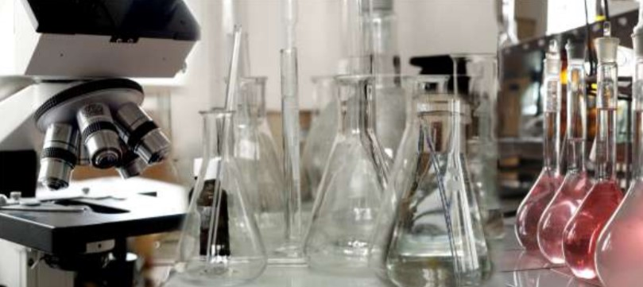
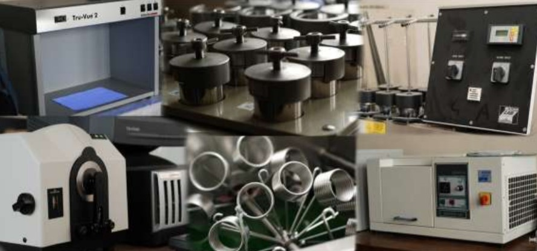
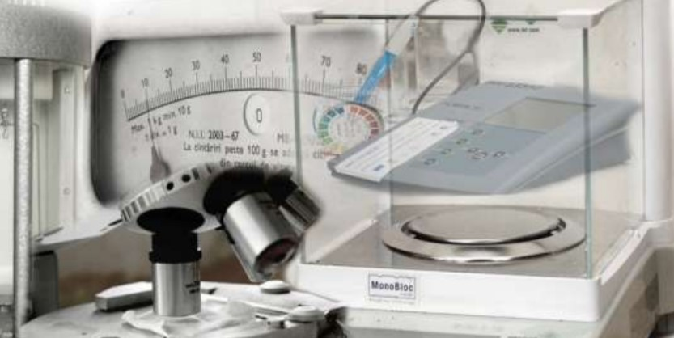

FUNDING PROGRAMME: ERANET-COFUND-MANUNET III, PN III, European and International Cooperation - Subprogramme 3.2 - Horizon 2020
PROJECT TITLE:Manufacturing of value-added textiles for aromatherapy and skin care benefits
ACRONYM:AromaTex
PROGRAMME WEB ADDRESS:http://www.manunet.net/
CONTRACT UEFISCDI No. 29/2018
STARTING DATA: 01.02.2018 PROJECT ENDING DATA: 31.12.2019
PROJECT PARTNERS:
- The National R&D Institute for Textiles and Leather - INCDTP (RO)
- "Gheorghe Asachi" Technical University of Iasi, Faculty of Textile Leather and Industrial Management (RO)
- Dogal Destek Urunleri Arastirma Sanayi ve Ticaret A.S. (TR)
- Magnum SX SRL (RO)
- UNITEKS Tekstil Gida Motorlu Araclar San.ve Tic.A.S. (TR)
PROJECT COORDINATOR: Popescu Alina
GENERAL OBJECTIVES:
The main objective of AromaTex project is to produce aromatherapeutic garments (sports and leisure wear) and skin/body care products (dresings and facial masks for microbial infections treatment and cosmetic pads for skin hydration and anti-acne) by using biologically path for essential oils and apiculture products.
SCIENTIFIC CONCEPT:
The AromaTex project builds on the commercial interest of SME partners in producing and selling of new textiles promoting wellbeing, by immobilization of biologically active compounds at the substrate surface and development of an efficient environmentally friendly functionalization bioprocesses for health care and stress management. The target applications are textiles used in close contact with human skin and that could benefit in terms of life quality, by being made of natural products & ecological processes. As a project results, tehnological knowledge of aromatherapy, biologically active compounds compatible to the textile fabrics and technological way of immobilization will be explained by laboratory simulated industrial process, up to pilot scale application and end-products developments. Application methods of the selected polymer bioactive compound systems will be optimized from technological, quality, ecological and therapeutically point of view.
TECHNOLOGICAL CHALLENGES:
- Development of polymer bioactive compound systems with tailored properties to be used for development of aroma therapeutic and skin/body care textiles;
- Optimization of the polymer bioactive compound systems adapted to an up-scalable technology for depositing on textile fabrics, with a particular focus on therapeutically desired effect and controlled release of essential oils;
- Prototype pilot scale up and validation of immobilization technology;
- Production of aroma therapeutic garments and skin/body care end-products.
EXPECTED EXPLOITABLE RESULTS & DELIVERABLES:
- A set of essential and fixed oils containing active substances & extraction protocol;
- A set of microparticle systems with controlled release of bioactive compounds & synthesis;
- A set of hydrogel and emulsions / dispersion systems containing essential oils & synthesis methods;
- Knitted and woven textile structures compatible to the selected application field.
- Optimized bioactive compound systems in form of emulsions and microparticles;
- Optimized technologies for immobilizations of polymer-bioactive compound systems on textile materials;
- Prototypes of aroma therapeutic microparticles obtained for pilot scale application;
- Prototypes of emulsions for skin/body care obtained for pilot scale application;
- Woven/ knitted textile materials prototypes containing aroma therapeutic microparticles and/or emulsions for skin and body care.
RESULTS
OBTAINED RESULTS IN 2018:
- 4 Variants of biologicaly active systems in the forms of stable emulsions;
- 1 Report on synthesis methods of stable emulsion and its characterization;
- 3 Variants of woven textile structures and 19 variants of knitted textile structures for aromatherapy and / or skin care;
- 12 Variants of woven / knitted textile structures ecologically preliminary treated;
- 2 Laboratory technology for immobilization of the polymer-bioactive compound systems (emulsions) on textile materials;
- 36 Variants of textile materials (woven/knitted) treated with stable emulsions;
- 1 laboratory technology for immobilization of microcapsules containing bioactive compounds on different textile materials;
- 64 Variants of textile materials (woven/knitted) treated with dispersions of microcapsules with essential oils
- 1 Report on complex characterization of textile materials for aromatherapy and skin care;
- 1 Project website;
- 1 Article accepted for publication in ISI rated journal - INDUSTRIA TEXTILA;
- 2 Articles published in procedings volume of International Conferences BDI rated/un-rated;
- 7 Communications as oral presentations or posters at national and international conferences.
Lavandula Angustifolia
Mentha piperita
Origanum onites
Rosemarinus Officinalis
Optical analysis of emulsions
Optical microscopy
Activitatea de cercetare ştiinţifică a reprezentat o preocupare constantă a cadrelor didactice ale facultăţii. Strategia adoptată de Facultatea de Design Industrial și Managementul Afacerilor este orientată către îmbunătăţirea continuă a infrastructurii de cercetare. Acumulate în timp, rezultatele nu au întârziat să apară, astfel că în urma Exerciţiului Naţional de Evaluare a Cercetării (ENEC), iniţiat de UEFISCDI şi desfăşurat în perioada mai-septembrie 2011 prin intermediul Sistemului Informatic Suport al Evaluării Cercetării (SISEC), domeniul Inginerie Industrială din care fac parte specializări ale facultăţii a ocupat poziţia 1 din cele 19 universităţi evaluate, iar domeniul Inginerie chimică a ocupat poziţia 2 din 6 universităţi evaluate.
În Facultatea de Design Industrial și Managementul Afacerilor activează, începând cu anul 2011, Colectivul de cercetare „Textile-Pielărie şi Management Industrial”, cod 31001, coordonat de Conferenţiar univ. dr. ing. Mariana Ursache. Conform Deciziei Rectorului nr. 482/02.03.2012, se înfiinţează în facultate şi se aprobă de către Senatul Universităţii Tehnice „Gheorghe Asachi” Iaşi structura organizatorică a centrului de excelenţă „Centrul de cercetare pentru materiale, produse şi procese avansate”, coordonat de Profesor dr. ing. Mirela Blaga.
LABORATORUL DE CERCETARE “ECOTEXTILE”
arrow_circle_right Obţinerea unor ecotextile cu o înaltă specificitate, cu o largă fundamentare ştiinţifică şi cu aplicaţii în sectoare cheie ale societăţii: sănătate, transport, securitate, agricultură
arrow_circle_right Proiectarea şi realizarea de noi materiale textile, inclusiv noi produse funcţionale ecologice (produse textile bio)
arrow_circle_right Crearea de materiale textile multifuncţionale cu valoare adăugată în vederea satisfacerii necesităţilor pieţei
arrow_circle_right Obţinerea de noi materiale ecotextile cu efecte antimicrobiene
arrow_circle_right Obţinerea de ecotextile cu proprietăţi aromoterapeutice
arrow_circle_right Realizarea şi evaluarea funcţionalităţii modelului experimental de ecotextile
arrow_circle_right Obţinerea de ecotextile destinate aplicaţiilor topice (bandaje anticelulitice, antistres, antiacneice, cu efect de tonifiere a pielii etc.)
LABORATORUL DE CERCETARE “TEHNOLOGII MODERNE DE FINISARE”
arrow_circle_right Realizarea studiilor privind noi tehnologii de finisare destinate obţinerii textilelor cu o înaltă specificitate, cu o largă fundamentare ştiinţifică şi cu aplicaţii în sectoare cheie ale societăţii: sănătate, transport, securitate, agricultură
arrow_circle_right Analiza proprietăţilor fizico-chimice ale materialelor textile obţinute prin tehnologii moderne de finisare
arrow_circle_right Elaborarea tehnologiilor de finisare în scopul obţinerii de produse textile competitive pe piaţă
arrow_circle_right Funcţionalizarea materialelor textile prin aplicarea unor tehnologii moderne de finisare
arrow_circle_right Testarea textilelor funcţionalizate prin metode moderne accesibile în cadrul laboratorului de cercetare
arrow_circle_right Realizarea de tehnologii textile inovatoare (nanotehnologie, biotehnologie, nanobiotehnologie, tehnologii de tratare a suprafeţelor etc.)
LABORATORUL DE PROIECTARE ŞI REALIZARE A TEXTILELOR MEDICALE
arrow_circle_right Realizarea studiilor de aplicare a unor medicamente pe suport textil
arrow_circle_right Analiza caracteristicilor fizico-chimice ale produselor care formează suportul material pentru textilele medicale
arrow_circle_right Dozarea in vitro a medicamentelor pentru studii de terapie a unor patologii specifice
arrow_circle_right mModelarea, proiectarea, simularea şi realizarea funcţională a elementelor componente a suportului textil pentru articole textile medicale, de mare complexitate.